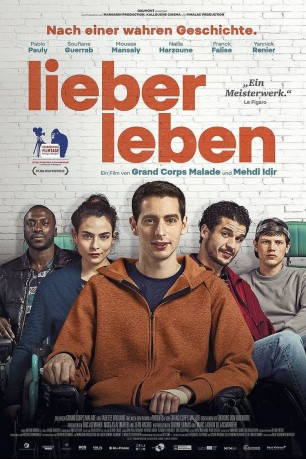

#9159 Lieber leben
 
 IMDB-Wertung: 7.4 / 10
IMDB-Wertung: 7.4 / 10  Metascore: 0
Metascore: 0 
LIEBER LEBEN ist ein filmischer Glücksfall, dem eine seltene Balance aus Heiterkeit und berechtigter Schwermut gelingt und der in jedem einzelnen Moment die Echtheit einer wahren Geschichte atmet. Ohne jede Spur von Sentimentalismus, aber dafür mit einer perfekten Dosis Galgenhumor nimmt uns LIEBER LEBEN mit in das Universum der kleinen Bewegungen und des großen Glücks.
Jahr: 2016
Dauer: 111 Minuten
FSK: 6
Land: Frankreich Studio: Neue Visionen FilmverleihTonspuren:
Untertitel: Deutsch,
Auflösung: 1080p (1920x804) Größe: 7690 MB
Genre: Drama, Komödie
Regisseur: Mehdi Idir, Grand Corps Malade
Drehbuch: Pierre Foucaud
Soundtrack:
Darsteller:
- Nailia Harzoune als Samia
- Dominique Blanc als Dr. Challes
- Horst Tappert als Derrick (archive footage) (uncredited)
- Pablo Pauly als Ben
- Soufiane Guerrab als Farid
- Moussa Mansaly als Toussaint
- Franck Falise als Steeve
- Yannick Renier als François, le kiné
- Jason Divengele als Lamine
- Rabah Nait Oufella als Eddy
- Alban Ivanov als Jean-Marie
- Anne Benoît als Christiane
- Côme Levin als Eric
- Samir El Bidadi als Samir
- Florence Muller als La mère de Ben
- Xavier Mathieu als Le père de Ben
- Valérie Even als La psy
- Eric Wagner als Max fumeur
- Saïd Yosri als Saïd, un pote d'Eddy
- Jibril Bentchakal als Djibril, un pote d'Eddy
- Adama Bathily als Adama, un pote d'Eddy
- Adrien Rob als Basketteur 1
- Corentin Fila als Basketteur 2
- Simon Mendes als Basketteur 3
- Lamine Camara als Coach Saint-Denis
- Bally Bagayoko als Arbistre basket
- Redouane Bougheraba als Jeune Marseillais qui bande
- Badr Iffach als Jeune Arabe qui bande
- Baptiste Philippe als Jeune cheveux
- Olivier Desautel als Tétra caillera
- Benjamin Lanclas als Tétra au bob
- Stéphanie Fatout als Dame désinhibée
- Sofiane Lakrouf als Docteur réa
- Arnaud Pfeiffer als Aide-soignant nuit réa
- Anne-Lise Kedvès als Infirmière réa méchante
- Gaelle Hausermann als Infirmière réa gentille
- Eliza Calmat als Infirmière réa gentille aussi
- Christian Duveau als Animateur karaoké
- Jean-Noël Lamblot als Aide-soignant (le vrai Jean-Marie)
- Mohamed Ikharazen als Aide-soignant cantine chauve mais beau gosse
- Arthur Vassel als Aide-soignant vestiaire
- Nicolas Chupin als Aide-soignant queue de cheval
- Nathalie Carvalho als Infirmière anti-escarres
- Elise Poisson als Infirmière sondage
- Marietou Baradji als Infirmière coupée au montage
- Souad Flissi als Cantinière
- Isabelle Brignoli als Aide-soignante lunettes
- François Chevet als Kiné Samia (le vrai François)
- Tony Da Silva als Chauffeur Toussaint
- Benoît Simon als Musicien chanteur
Datei: X:\2016(G-M)\Lieber leben (2016, FSK6, 1920x804).mkv seit 19.07.2018
Festplatte: HD 2016(A-Z)
 Es gibt insgesamt 164 Filme in der Gruppe '2016(G-M)'
Es gibt insgesamt 164 Filme in der Gruppe '2016(G-M)'